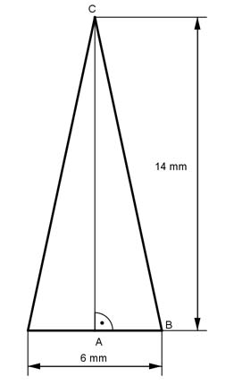

Aufgabe 99 Eine Schneide einer Balkenwaage hat die Form eines gleichschenkligen Dreiecks mit der Basis 6 mm und der Länge eines Schenkels von 14 mm. Welche Masse m hat die Schneide, wenn sie 20 mm dick ist bei einer Dichte von 7,85 g/cm³?  6 mm = 0,6 cm 14 mm = 1,4 cm 20 mm = 2 cm AB = 6 mm/2 = 3 mm Satz von Pythagoras im Dreieck ABC: BC² = AB² + AC² |-AB² AC² = BC² - AB² = 1,4² cm² - 0,3² cm² = 1,87 cm² |√ AC = 1,37 cm 0,6 cm * 1,37 cm V = G * d = -------------------- * 2 cm = 0,82 cm³ 2 m = V * р = 0,82 cm³ * 7,85 g/cm³ = 6,4 g